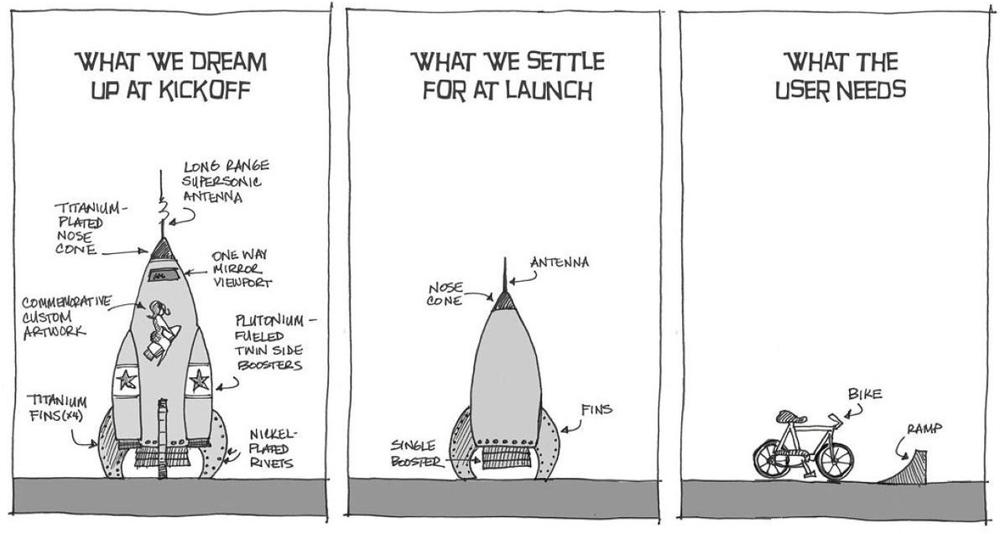
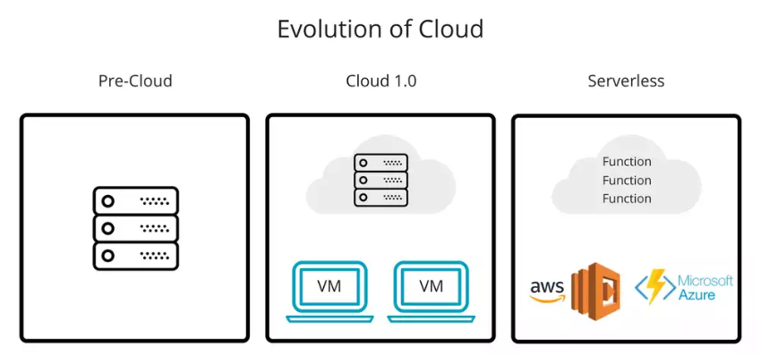
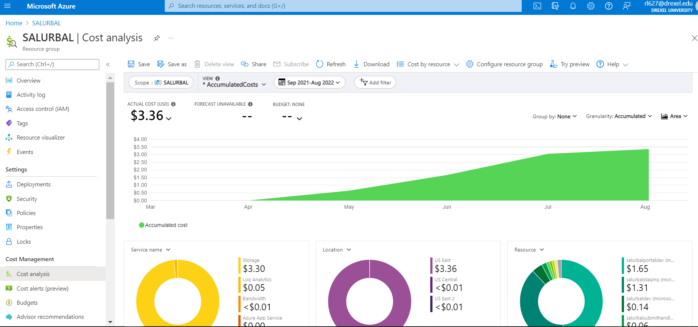

F4. Meta)data are in a searchable resource.
(Meta)data are registered or indexed in a searchable resource.
We built a bespoke web application to index and make our data searchable. We leverage serveral fundamental technologies
Blob storage (Azure): highly scalable, performant and affordable storage solution. We organized files via our projects global identifiers
var_name; consequently, our Blob sotrage container functioned as an API for our front-end application.Front-end application (Next.js): Next.js is a full stack JavaScript web development framework which can build via static site generation (SSG) or work with server-side rendering (SSR). We chose to deploy our web application as a staticly generated site because the content of our data portal would largely be static other than between large data updates. SSG at build-time allows us to deploy a static site at a fraction of the cost of a web application that requires a server.
Serverless architecture for computation (Azure Functions). We also wanted to allow users to compile data and download a custom data extract. While the actual selection UI can be built with JavaScript and run client-side, the final data merges, file preparation and email notification could be problematic both resource and security wise to be run clientside. We leverage serverless computing to handle these more complex or computationally intensive actions. Compared to Cloud 1.0 computing, serverless computing takes care of the server adminstration and allows us to develop bespoke solutions that are comparably performant, much more affordable and easier to maintain.
Goal and Tool Alignment

It is key to recognize that CKAN or ICPSR are solutions to global/multi-national/multi-discplenary FAIR data problem. FAIR data implementation for our own organization need only serves only our community of researchers - think 100 epi/public health researchers rather than millions of researchers of all fields.
Given the difference the dramatic difference in the scale of the problem, it is logical that the solution could be and likely should be different.
Baggage of traditional portals
They are by design extremely generablizable - to be widely or generally applicable to all types of projects, data or organizations and 2) large scale open data contribution - mechanisms to allow authentication, authorization, uploading from thousands of contributors.
These selling points which make them good platforms for serving a broad community of hundreds of thousands of researchers/organiation from all types of fields actually make them less appealing for use by a single organiation. Firstly, it is difficult to for an extremely generalizable platform be tailored to specific needs of an organization. Secondly, the technical infrasture that support large scale open data contribution are expensive to maintain, difficult to develop and require dedciated staff with IT/DevOps expertise.
Modern solutions
While these platforms make sense for really large FAIR data initiatives they may not make sense for us due to cost and expertise. Importantly many of these platforms was built over a decade ago (e.g. CKAN released in 2006) with infrastructure that are in many senses out of date. This document will give a high level overview of how we leverage emergent technologies (open source UI frameworks, cloud infrastructure and serverless computing) to build a highly customizable and resource-efficient data portal.
Open source User Interface frameworks.
In the past few years, large tech companies have fortunately open sourced their internal frameworks for making web content (Facebook - React.js , Vercel - Next.js). With these tools it is now able to make incredibly customizable, scalable and complex websites all in JavaScript. These JavaScript have some really big selling points:
- They don’t need virtual machines or a server to run (essentially free to deploy anywhere).
- There is an incredible amount of open-source education resources for these open-source frameworkss (much easier to learn and master)
Even the creators of CKAN are moving towards this direction.
Even still, there’s a high learning curve before you can build a proper application. That’s because you need to learn about Python, templating, data loading and so on. If you’d like to integrate content or rich visualizations things are even more complex.
So, we need something simple but customizable.
Think about how apps are created as a frontend developer. You create some files, write some code, load some data and then simply deploy it. We don’t have to worry about Docker, Kubernetes, data storage, Postgres etc.
We are using React.js and Next.js to build the front-end of our data portal.
Serverless Computing

- Pre-cloud buy server, administer to server, and run code on them.
- Cloud 1.0
buy serverrent and administer to server, and run code on them. - Severless
buy server, rent and administer to server,software and run code on them.
CKAN utilizes Cloud 1.0 you are just renting servers which you have to administer to. While you can easily get access to many servers you still face traditional IT problems: - you have to rent servers for each application - need to learn server technologies (linux, dockers, nginx) to use them - need to worry about server scalable. What server should I rent? How much RAM do I need? How much computing power do I need?
Serverless architerutre move away from renting and administering and directly to renting computing power as needed. Rather than provider giving you a server, you give them code and they worry about where it should run. this is incredibly cheap and lets us focus on building our application rather than server administration.
Direct Value
Highly customizable application
Basically Free
